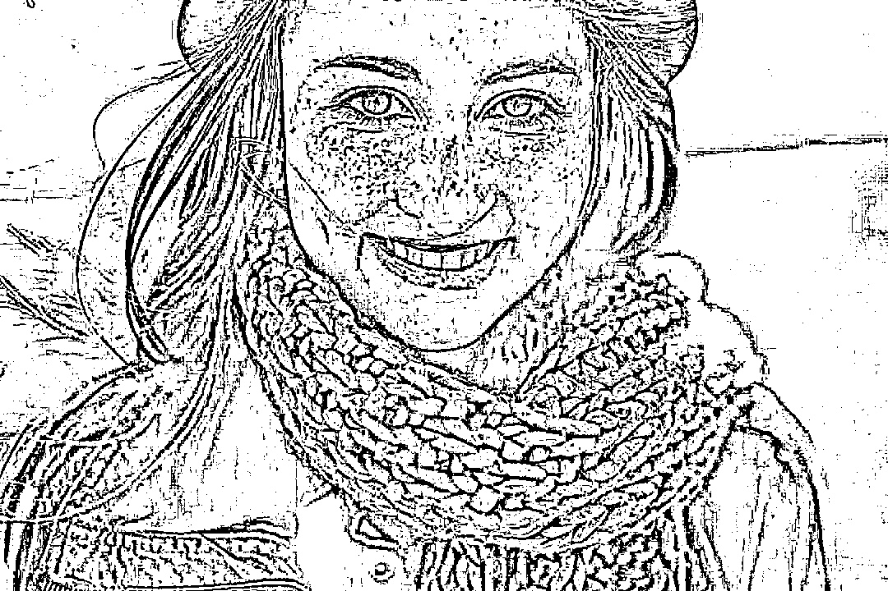

Black-and-White Service (Oreo service)¶
Dieser Service, soll anhand eines (Farb)-Bildes, verschiedene Schwarz-Weiß-Bilder erzeugen. Der Service sollte dann später von Gruppe 6 durch das von ihr entwickelte UI verwendet werden, sodass der Benutzer von 3 möglichen Entwürfen sich ein Bild aussuchen kann, dass mit der Auftragserfassung gespeichert werden soll.
Evaluation¶
Da der Image-Processing-Service hauptsächlich mit dem Frontend interagiert, wurde evaluiert, ob eine Implementierung des Service direkt im UI nicht von Vorteil wäre.
Einer der Gründe war die Auswahl des Berechnungsalgorithmus und deren Parametrisierung. Diese haben einen erheblichen Einfluss auf das resultierende Schwarz-Weiß-Foto. Diesem Problem, wurde versucht entgegenzuwirken, indem der Micro-Service drei verschiedene Berechnungen mit jeweils unterschiedlichen Algorithmen erzeugt. Dennoch besteht das Risiko, dass aufgrund der Lichtverhältnisse die Ergebnisse nicht zufriedenstellen sind.
Aus diesem Grund wurde eine Alternative entwickelt, die direkt im Browser läuft, und der Backend-Lösung gegenüber gestellt.
Hinweis
Die entwickelte Web-Version, mit der die Evaluation vollzogen wurde, liegt der FaceBox-Demo bei.
Dabei kamen wir zum Ergebnis, dass die Realisierung im Frontend durchaus vorstellbar ist. Jedoch verfügt die JavaScript-Implementierung von OpenCV weniger Funktionalitäten, als die Python-Implementierung. Zudem ist die Vision, dass sämtliche Bildbearbeitungsprozesse die zukünftig im EmRoLab notwendig sein werden, dem Service hinzugefügt werden können.
Bemerkung
Weitere Informationen können aus diesem Artikel entnommen werden https://blog.theodo.com/2019/02/computer-vision-web-opencv-js/
Schwarz-Weiß-Berechnung¶
In diesem Abschnitt wird schrittweise die Schwarz-Weiß Berechnung anhand eines Beispielbildes erläutert. Jeder dieser Varianten wird derzeit von dem Service ausgeführt, sodass 3 unterschiedliche Ergebnisse entstehen.
Folgendes Beispielbild wurde verwendet:

Bemerkung
Neben den hier aufgeführten Berechnungsmethoden und Algorithmen, gibt es noch eine weitere Variante, bei der mittels Otsu’s Binarization, oder auch Otsu’s method genannt, ein Schwellwert definiert werden kann. Dies erfolgt über eine bimodale Verteilung. Wenn ein Bild über keine solche Verteilung verfügt, kann diese Operation nicht ausgeführt werden. Aus diesem Grund wurde sich mit der Frontend-Gruppe darauf geeinigt, dass der Service nur mit den folgenden Methoden und Algorithmen die Berechnung ausführt.
Grayscale¶
Bei der Schwarz-Weiß-Berechnung wird zunächst das Original-Bild aus einem MinIO-Bucket eingelesen. Anschließend wird aus dem Originalfoto ein Grayscale Foto erzeugt, bei dem das Farbspektrum auf eine Pixel-Range von 0 bis 255 verteilt wird (0 Schwarz, 255 Weiß).
Wird diese Operation auf das Beispielbild ausgeführt, so erhält man folgendes Ergebnis.
{kind=link}
Daraufhin erfolgt die eigentliche Schwarz-Weiß-Berechnung mittels Threshold. Hierfür bietet OpenCV verschiedene Operationen, die im Weiteren erläutert werden.
Bemerkung
Image-Thresholding ist ein simples, dennoch äußerst effektives Verfahren, bei dem Bilder in einen Vordergrund und Hintergrund unterteilt werden. Voraussetzung hierfür ist die Erzeugung eines Grayscale-Bildes. Die Ergebnisqualität ist von der Kontraststärke des Originalbildes abhängig. Für weitere Informationen siehe https://www.mathworks.com/discovery/image-thresholding.html
Simple-Threshold¶
Bei dem Simple-Thresholding wird jeder Pixel mit einem Threshold-Value verglichen. Sollte der Wert des Pixels größer sein, als die des Threshold-Values, wird ein definierter Wert zugewiesen (z. B. 255 für Weiß).
Der Service verwendet standardmäßig eine Threshold-Value von 145. Für weitere Informationen bitte in die API-Beschreibung schauen.
Wird auf dem Grayscale von unserem Beispielbild ein Simple-Thresholding mit dem Wert 145 ausgeführt, so erhält man folgendes Ergebnis:
{kind=link}
Das Problem, bei dem Simple-Thresholding ist, dass ein globaler Wert definiert wird, gegen den jeder Pixel verglichen wird. Da Bilder in der Regel unterschiedlich ausgeleuchtet sind, führt dies zu einer Problematik, bei dem teilweise Bildausschnitte eingefärbt werden, die das Originalbild stark deformieren.
Mit einem Adaptive-Thresholding kann hier entgegengewirkt werden.
Adaptive-Threshold¶
Bei dem Adaptive-Thresholding werden verschiedene Threshold-Values für einzelne Regionen des Bildes berechnet. Dies führt gerade bei Bildern, die unterschiedlich ausgeleuchtet sind, zu besseren Resultaten als mit dem Simple-Thresholding.
In OpenCv wird der Adaptive-Threshold für ein Bild mit zwei adaptiven Methoden gebildet:
ADAPTIVE_THRESH_MEAN_C
ADAPTIVE_THRESH_GAUSSIAN_C
Neben diesen Methoden gibt es 2 weitere Parameter, die eine große Auswirkungen auf das Resultat haben:
blockSize
C (Konstante)
Für die folgenden Beispiele wurden die Standardwerte des Service verwendet:
blockSize = 11
C = 2
ADAPTIVE_THRESH_MEAN_C
Bei diesem Algorithmus wird der Threshold folgendermaßen berechnet: Der Threshold T(x,y) ist ein Repräsentant für die benachbarten Punkte x, y minus einer Konstante C.
Wird auf dem Grayscale von unserem Beispielbild ein Adaptive-Thresholding mit den zuvor genanten Parametern und dieser Methode ausgeführt, so erhält man folgendes Ergebnis:
{kind=link}
ADAPTIVE_THRESH_GAUSSIAN_C
Bei diesem Algorithmus wird der Threshold folgendermaßen berechnet: Der Threshold T(x,y) ist eine gewichtete Summe (Bei diesem Algorithmus wird der Threshold folgendermaßen berechnet: Der Threshold T(x,y) ist eine gewichtete Summe (Kreuzkorrelation mit einer Gauß-Fensternfunktion) für die benachbarten Punkte x,y minus einer Konstante C.
Wird auf dem Grayscale von unserem Beispielbild ein Adaptive-Thresholding mit den zuvor genanten Parametern und dieser Methode ausgeführt, so erhält man folgendes Ergebnis:
{kind=link}